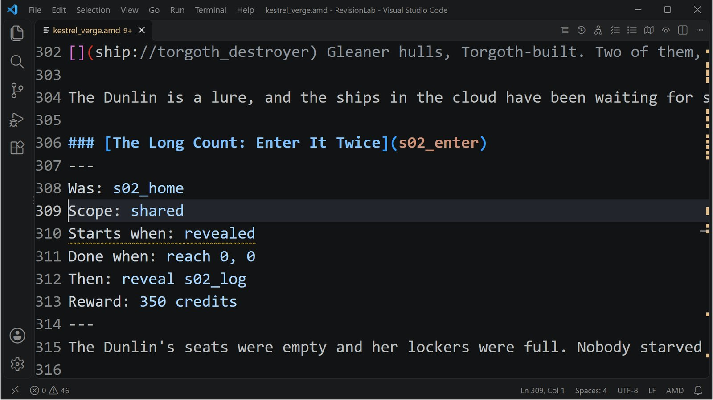

Class 6, Lecture 9 - Revising between sessions¶
What you will have at the end¶
A list, measured by your own hand, of what you may change in a universe while a crew is partway through it. You will reword a step the crew is on, add a lead, delete a step, put it back, rename one the right way and the wrong way, and strand a step on purpose and get it back. After each round you will continue the same saved game and look.
You will do all of it in a copy, with a save of its own. The crew's campaign is never touched.

A revised step in kestrel_verge.amd, with itsWas: line naming the step it replaces.
You copy a folder, add one line to story.mast, and then change kestrel_verge.amd
five times.
The video¶
About 5 minutes. Subtitles are available in the player.
Before you start¶
- Your
MyUniversemission as Lecture 8 left it.kestrel_verge.amdmatchesc6-08-playtesting\example\. If you took Lecture 2, your file has its three lines and two records as well, and nothing here changes. sbs lint MyUniversesaysclean.- The game closed.
Nothing in this lecture changes MyUniverse. Lecture 10 starts from Lecture 8's files,
as its page says.
Words for this lecture:
| Word | Meaning |
|---|---|
| Live save | A save a crew is partway through. The thing you must not break |
| Lab | A copy of your mission that keeps its save in a slot of its own |
| Key | The word in round brackets in a record's heading. It is how the save knows the record |
| Parked | Put aside in the save, not shown, and not thrown away |
| Stranded | Hidden, with nothing left in the file that can reveal it |
Step 1 - Two halves¶
Lecture 2 showed you the inside of a save. For each step of your story it holds the key and a state, and none of your words.
So a campaign in progress is two halves. The save holds what the crew did. Your file holds what there is to do. Every time the game starts it joins them by key.
Everything on this page follows from that one sentence. Change words, and the crew sees the new words. Change a key, and the save no longer knows the record.
Step 2 - Make the lab¶
- In File Explorer, open
C:\Cosmos\data\missions. Copy theMyUniversefolder and paste it beside itself. Rename the copyRevisionLab. - Open
RevisionLabin VS Code. Open itsstory.mastand find this line near the top:
- Add one line under it:
That line is the whole trick. The lab has the same title as your campaign, so without
it the two would share one save (Lecture 10 measures that). With it, the lab plays in
slot 6 and writes universe_save_the_kestrel_verge_6.yaml. Your campaign, in slot 1, is
a different file.
Step 3 - Give the lab a campaign in progress¶
Play the lab as far as the end of evening 2. This is the walk from Lecture 8: alone, as fast as you can.
- Hail the Compact, pay the levy, take the Escort. Do not fly it.
- Evening 1: engage The Long Count: One of Five, scan the Wren, engage Enter It.
- Evening 2: engage Two of Five, destroy two ships, engage Enter It Twice.
- Close every window of the game.
Where the lab's campaign stands now, as it was measured:
| The ship | Kestrel Relay, (0, 0) |
| Credits | 1200 (150 of it is salvage from scanning the Wren) |
| Standing with Hollin | 20 |
| Done | One of Five, Her Log, Enter It, Two of Five, Bait, Enter It Twice |
| Open | The Long Count: Three of Five. Also The Tern's Manifest, and your four Class 5 leads |
| Hidden | The Plover's Price and everything after it |
| In hand | Hollin Compact: Escort |
Step 4 - Round one: seven changes¶
Open the lab's kestrel_verge.amd. Make all seven, then save.
1. Reword a step the crew is on. Find ### [The Long Count: Three of Five](s03_go).
Change its title, and its first sentence. Leave the key alone.
2. Reword a step that is finished. Find ### [The Long Count: One of Five](s01_go)
and change the title.
3. Add a lead. Above the heading ## [Dialogue](dialogue), with an empty line after
it, add:
### [A Lamp for the Wren](x_lamp)
---
Scope: shared
Starts when: at once
Done when: reach 2, 2
Reward: 100 credits
---
The Compact wants a marker lamp left at the Wren, at (2, 2), so that nobody else has to find her by accident.
4. Delete a finished step. Delete the whole record ### [The Long Count: Enter
It](s01_home), from its heading to the empty line after its text.
5. Rename a step, the right way. Find ### [The Long Count: Enter It Twice](s02_home).
Change the key, and add a Was: line as the first line of the fence.
Then find the one line that names the old key, in the step before it, and change that too.
6. Rename a step, the wrong way. Find ### [The Long Count: Her Log](s01_scan) and
change the key to s01_log. Change Then: reveal s01_scan to Then: reveal s01_log.
Add no Was: line.
7. Add a step behind a finished one. Find the fence of s02_enter, the step you
renamed in change 5. Change its Then: reveal s03_go to Then: reveal s02_log. Then
add the new step above the Dialogue heading:
### [The Long Count: The Dunlin's Lockers](s02_log)
---
Scope: shared
Starts when: revealed
Done when: reach 4, 4
Then: reveal s03_go
---
Have the Dunlin's lockers counted at Kestrel Relay before anything else.
Now lint.
Two warnings, and both are about change 4:
| Lint says | It means |
|---|---|
"s01_log Then reveals s01_home, and no record has that key, so nothing is revealed" (dangling-reveal) |
The step before the deleted one still points at it |
"The Long Count: Two of Five waits to be revealed, and nothing reveals it ... It never appears" (never-revealed) |
The step after the deleted one has lost what revealed it |
That pair of warnings is lint telling you that you have cut your spine. For a new game it is fatal. For this save it is not, because the crew is already past that point. Start the lab again and look.
| Change | What the continued game showed |
|---|---|
| 1. An open step reworded | The Quest Log has The Long Count: The Plover, Active, with the new sentence. Nothing was lost |
| 2. A finished step reworded | It is listed as The Long Count: The Wren, Done |
| 3. A lead added | A Lamp for the Wren is in the Quest Log, Active |
| 4. A finished step deleted | Enter It is gone from the Quest Log. The save parked it: the game's own report reads "parked ... story step(s) the universe file no longer has (kept in the save, not shown)" |
5. Renamed, with Was: |
Enter It Twice is still Done. The save's record moved to the new key |
6. Renamed, with no Was: |
The old step was parked. The new key is a new step, hidden, and nothing will reveal it, because the step that would have is already done. Her Log has vanished from the Quest Log |
| 7. A new step behind a finished one | Hidden. The step that reveals it was finished last week, and a finished step does not reveal again |
| Everything you did not touch | Credits 1200, standing 20, the Escort in hand, three places charted |
Close the game.
Step 5 - Round two: putting back, and two traps¶
8. Put the deleted record back. Paste ### [The Long Count: Enter It](s01_home)
back where it was, above Two of Five. (It is in your MyUniverse file.)
9. Tell the hidden step to start at once. In ### [The Long Count: The Dunlin's
Lockers](s02_log), change Starts when: revealed to Starts when: at once.
10. Delete the step the crew is on. Delete the whole record ### [The Long Count: The
Plover](s03_go).
Save, and start the lab again.
| Change | What the continued game showed |
|---|---|
| 8. The deleted record put back | Enter It is back in the Quest Log, and it is Done. Its state came back with it. A step added fresh would have been hidden |
9. Starts when: at once on the step that was hidden |
Still hidden. The save recorded it as hidden in round one, and the save won |
| 10. The open step deleted | The Plover is gone and parked. The Plover's Price, which it would have revealed, is stranded: hidden, with nothing left to reveal it. The campaign has no next lead |
Row 10 is the accident this lecture exists for. Lint saw it coming: "The Long Count: The
Plover's Price waits to be revealed, and nothing reveals it" (never-revealed). Close
the game.
Step 6 - Round three: what gets a stranded step back¶
The game's own guide says to give a stranded step State: active. That was tried, and
it did not work.
11. Try the guide's cure. In ### [The Long Count: The Plover's Price](s03_ask),
change Starts when: revealed to State: active.
12. A new key. Change the key of The Dunlin's Lockers from s02_log to
s02_lockers, delete its Then: line, and change the line that reveals it to
Then: reveal s02_lockers.
Save, start the lab, look, and close.
| Change | What the continued game showed |
|---|---|
11. State: active on a step the save has as hidden |
Still hidden |
12. The Dunlin's Lockers under a new key, at once |
The Long Count: The Dunlin's Lockers is in the Quest Log, Active. The old key was parked |
13. The same cure for the stranded step. Change the key of The Plover's Price from
s03_ask to s03_price, and write Starts when: at once where State: active was.
Start the lab once more.
| Change | What the continued game showed |
|---|---|
13. The stranded step under a new key, at once |
The Long Count: The Plover's Price is in the Quest Log, Active. The campaign has a next lead again |
The rule. The save decides the state of every key it has seen. Your file decides the
state of a key the save has never seen. So a step that is stuck gets a new key, with no
Was: line, and Starts when: at once. When you do it, change every Then: reveal that
names the old key.
Step 7 - Three more that were measured¶
These were changed in the lab between the same launches.
| Change | What the continued game showed |
|---|---|
The ship renamed in settings.yaml, Artemis to Kittiwake |
Kittiwake had Artemis's standing and her Escort. The game's report: "ship 'Kittiwake' continues the saved record of 'Artemis' (the only unmatched ship and record on side tsn)" |
The Narrative chapter moved to a file of its own, story.amd, with a File: line left behind (Class 5 Lecture 9) |
Every step had the state it had before the move. Lint was clean for both files: it follows a signal from one file to the other |
The title changed, in all four places in story.mast, to The Kestrel Verge II |
A new campaign: 500 credits, standing 0, nothing done, in a new file with the new title in its name. The old file was not touched, and the old campaign was still in it |
That last row was measured in slot 1, where the new file was
universe_save_the_kestrel_verge_ii_1.yaml.
Step 8 - The list¶
| You do this between evenings | A campaign in progress | Safe? |
|---|---|---|
| Reword a title, a description, an objective | Shows the new words | Yes |
Add a lead or a job that starts at once |
Has it | Yes |
| Add steps after the step the crew is on | Has them when it gets there | Yes. This is how a campaign is written |
Rename a key, with Was: and every Then: reveal changed |
Keeps the step's state under the new key | Yes |
| Rename the ship | Keeps its record | Yes, one ship at a time |
| Move a chapter into a file of its own | Unchanged | Yes |
| Delete a step that is finished | Parks it. Nothing else changes for this crew | Yes for this crew. A new game needs the spine joined up again: lint says where |
| Put a deleted record back | Gets its state back | Yes |
Rename a key with no Was: |
Parks the old state. The new key starts from your file | Only as a cure, in Step 6 |
| Add a step behind one that is finished | Never shows it | No. Add it after the open step, or make it a lead that starts at once |
| Delete the step the crew is on | Strands everything after it | No. If it is done already: Step 6 |
| Change the title | Starts a new campaign | Never |
Two rows of the game's guide were not measured for this page: that a changed
Done when: is used from then on, and that a renamed key can list two old keys,
Was: a, b.
Before you send a changed file to a crew, rehearse it on their save. Ask the host
for a copy of the save. In common_data\saves, name the copy
universe_save_the_kestrel_verge_6.yaml. Put your changed kestrel_verge.amd in the
lab, start the lab, and read the Quest Log. That was measured: a slot 1
save, copied and named for slot 6, continued in the lab with every credit and every
step it had, and the slot 1 file was the same afterward.
If something goes wrong¶
| What you see | Likely cause |
|---|---|
| The lab starts where your real campaign stopped | The SAVE_SLOT line is missing from the lab's story.mast, or is above the UNIVERSE_SELECT line's comment and not on a line of its own |
| A step you renamed is hidden again | No Was: line. Add Was: and the old key, and start again: the parked state moves across |
| A step you added never appears | It says Starts when: revealed and the step that reveals it is finished. Or it appeared hidden once already: give it a new key |
| The campaign has no open step | A step was deleted while it was open. Step 6, change 13 |
| Lint: "waits to be revealed, and nothing reveals it" | You deleted or renamed the step before it. For a new game, point the step before that one at it |
mast.runtime.log says "there is no quest ... to start" |
A Then: reveal names a key that is gone. It is the dangling-reveal warning, happening |
Exercise¶
- Make a lab from your own campaign, with the slot line. Play it one evening in.
- Reword the step the crew is on. Continue, and read it in the Quest Log.
- Rename a finished step with
Was:. Continue, and check that it is still Done. - Delete the open step. Continue, and see the campaign with no next lead. Then get it
back two ways: put the record back, and, in a second try, a new key with
at once. - Write on
campaign.md, under a heading## Rules for changes, the three things you will never do to a file a crew is playing. - Delete the lab's save,
universe_save_the_kestrel_verge_6.yaml, when you are done.
Checkpoint¶
You are done when all five are true:
RevisionLabhas the slot line, and your campaign's save was not touched by anything you did today.- You have seen a reworded step in a continued game.
- You have renamed a step with
Was:and it kept its state. - You have stranded a step and brought it back.
- You can say, without this page, which of the two decides a step's state: the save, or your file.
Next¶
Lecture 10 packs the campaign up for a crew that is not in your house. Its Step 7, "Sending Act Two", is this lecture's list in three rules.
Further reading¶
- "What the game remembers" in the Open Universe writer's walkthrough: "Changing your
file between evenings". Its advice for a stranded step,
State: active, is the one thing on that page that did not work when it was measured. - Lecture 2 of this class: the save file, and slots.
- Class 5 Lecture 9: moving a chapter into a file of its own.
Download this lecture's finished files (a zip of its example folder).